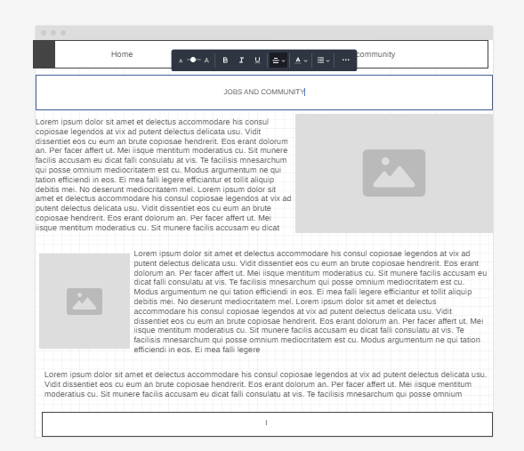

Welcome to the Community & Jobs Section
Join our community forums to connect with other data science enthusiasts, share ideas, and collaborate on projects. The Community & Jobs section is the heart of DataScienceCentral, where members can engage in discussions, ask questions, and provide answers. Additionally, our job board features the latest data science job postings, allowing you to find the perfect opportunity to advance your career. Whether you're looking for a new role or seeking advice from peers, this section is dedicated to supporting your professional growth and development.


wireframe
